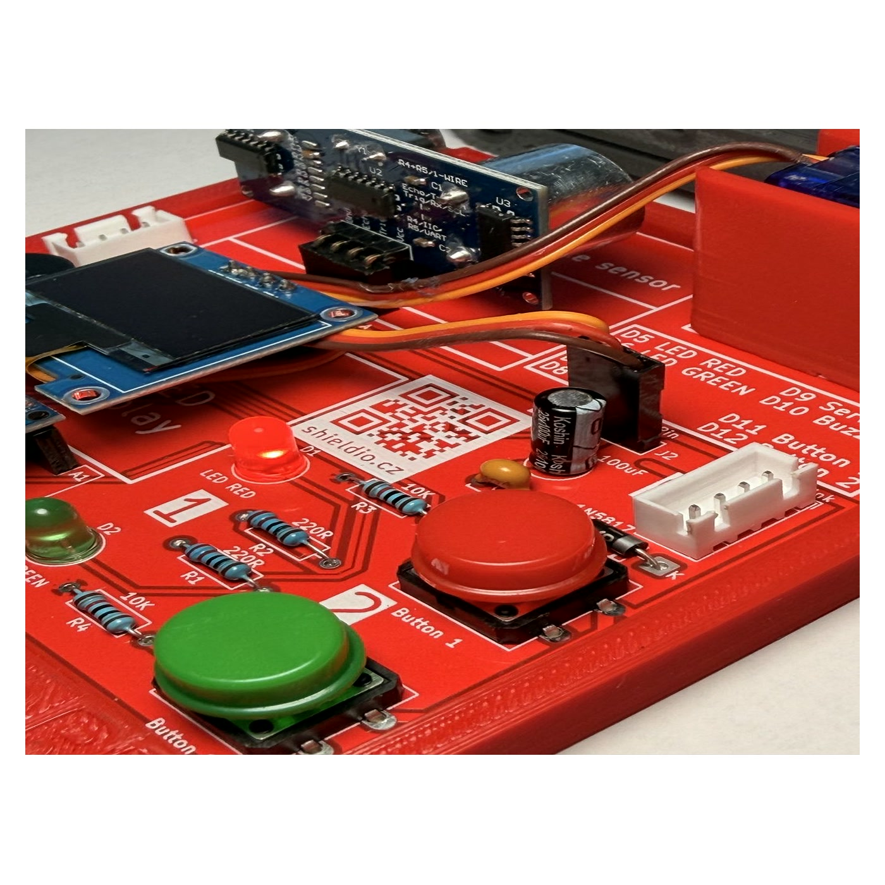
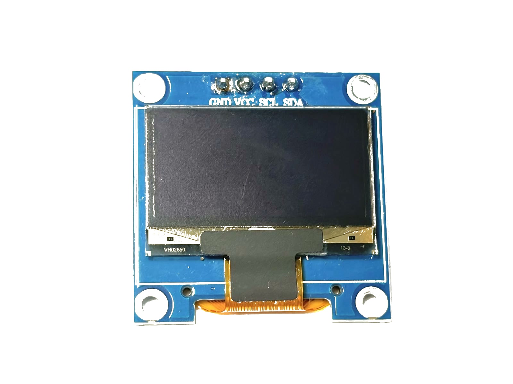
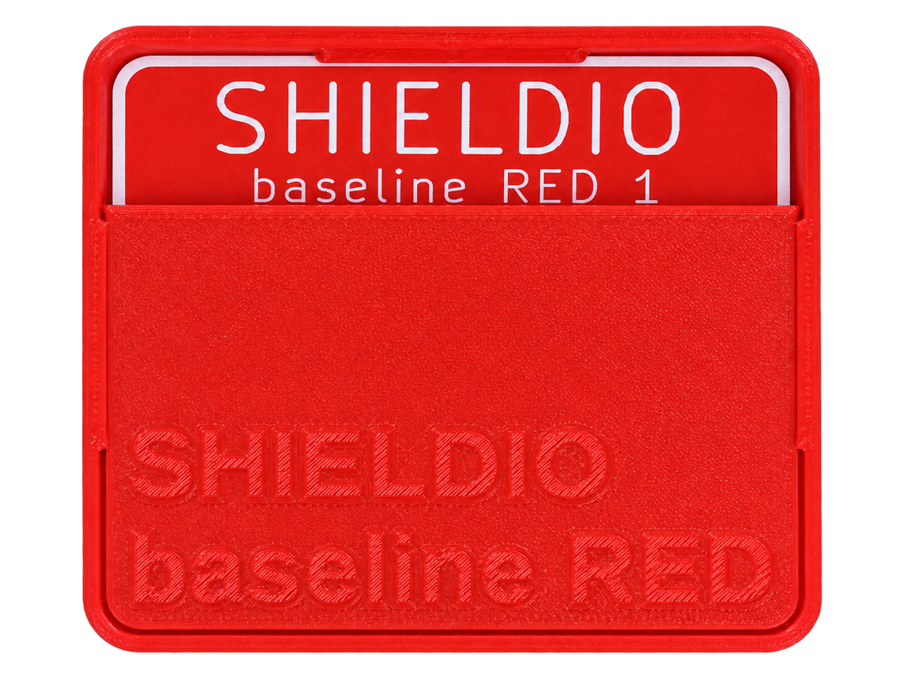

Začněte blikající LED. Potom nechte senzor zvednout závoru nebo ukázat vzdálenost na OLED. RED má senzor, servo i displej na jedné desce.

Otevřete připravený program a zvolte Spustit na desce. Zelená LED bliká. Změňte obě čekání z 500 na 1000 ms a spusťte znovu: blikání zpomalí. Obrázek ukazuje editor.
Otevřít blikání LED →Otevřete návod a spusťte startovní program. Předmět pod 15 cm zvedne závoru. Pak změňte práh 15 cm. Foto ukazuje skutečný prototyp.
Připravit a rozhýbat závoru → Startovní program →Podle návodu spusťte připravený program: v 20 cm svítí zelená LED, v 10 cm červená a OLED ukazuje vzdálenost. Pak změňte jeden práh. Foto ukazuje samotný senzor.
Vyzkoušet vzdálenost a LED → Připravený program →Sestavte program podle zadání v návodu. Pohyb ruky mění tón bzučáku; pak upravte rozsah tónů. Foto ukazuje bzučák, ne hotový nástroj.
Návod: Theremin – bezdotykový nástroj →
Podle zadání sestavte program pro měření času na OLED. Ověřte zvolený pohyb pro spuštění a zastavení, pak změňte práh vzdálenosti. Foto ukazuje detail desky.
Návod: Časovač →
Spusťte měření podle návodu a posuňte předmět: OLED ukáže změnu vzdálenosti v cm. Pak porovnejte údaj s pravítkem. Foto ukazuje použitý displej.
Návod: Digitální metr →
Rozšíření vyžaduje vlastní držák a vodiče. Podle návodu připravte otáčení senzoru a body na OLED; pak změňte krok otáčení. Foto ukazuje jen senzor.
Návod: Ultrazvukový radar →Máte sestavenou RED? Připojte ji datovým USB kabelem k počítači s Chrome nebo Edge. Spustit na desce program zkontroluje a nahraje. Samotné Zkontrolovat program do desky nic nezapíše.
Nejnáročnější baseline spojuje ultrazvukové měření vzdálenosti, servo a displej na jedné 100×100 mm desce, s popisy součástek přímo na plošném spoji.



Modul kompatibilní s Arduino® Nano řídí desku. Editor Shieldio umí program sestavit, zkompilovat a nahrát přes USB.
Ultrazvukový snímač měří vzdálenost od překážky jako vstup pro program.
OLED displej a dvě barevné LED pro okamžitou zpětnou vazbu z programu.
Servo SG90 pro mechanický pohyb a bzučák pro zvukovou odezvu.
Dvě tlačítka přímo na desce pro ovládání bez nutnosti počítače.
Konektory JST-XH a Power&Data link pro robustní propojení mezi deskami.
100×100 mm formát, stejný napříč celou řadou Baseline.
RED V4 testujeme a připravujeme V5. RED se zatím neprodává; přehled popisuje plánované možnosti sestavení. Formulář níže slouží pouze k nezávaznému zjištění zájmu.
| Varianta | Před prvním programem |
|---|---|
| RED DIY · vlastní pájení | Součástky je potřeba osadit a zapájet, zkontrolovat polaritu a spoje. Postup najdete v návodu na sestavení. |
| RED READY · sestavená deska | Pájení není součástí programovací hodiny. Předem ověřte datový USB kabel, port a první nahrání programu. |
Obě varianty používají stejný hardware RED, editor Shieldio a projektové návody. Liší se přípravou desky.
RED V4 právě testujeme a současně připravujeme V5. Formulář nám pomůže zjistit, komu by budoucí vývojová série dávala smysl — ve škole, kroužku nebo doma.
RED V4 testujeme a připravujeme V5. RED se zatím neprodává. Napište nám, pokud chcete dostat informace o dalším vývoji a dostupnosti; jde o nezávazný zájem bez objednávky nebo rezervace.